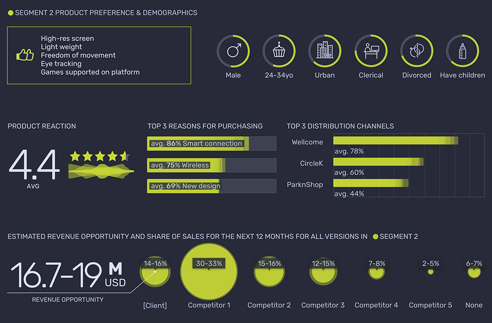
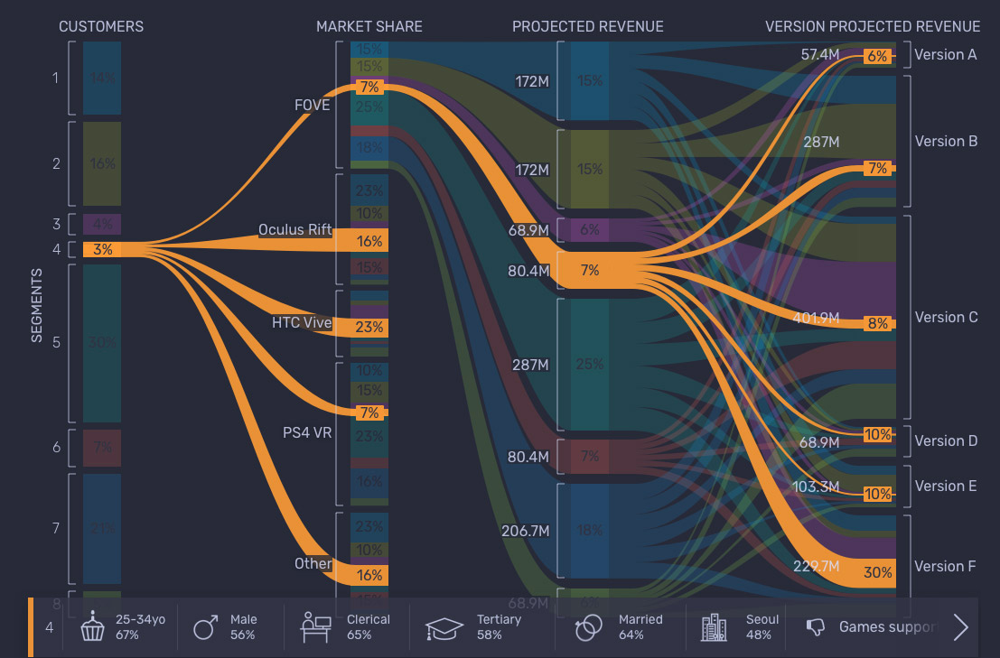
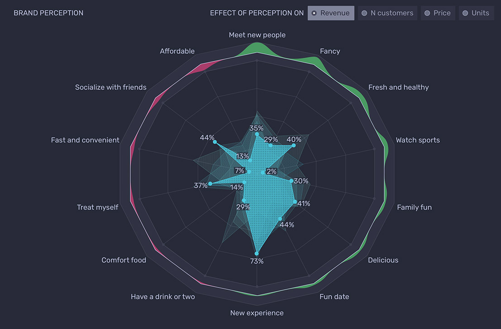
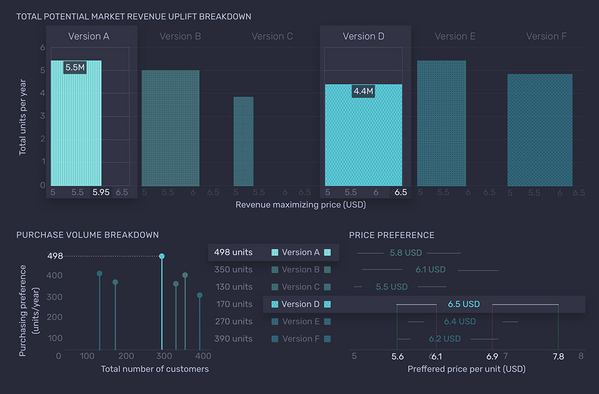
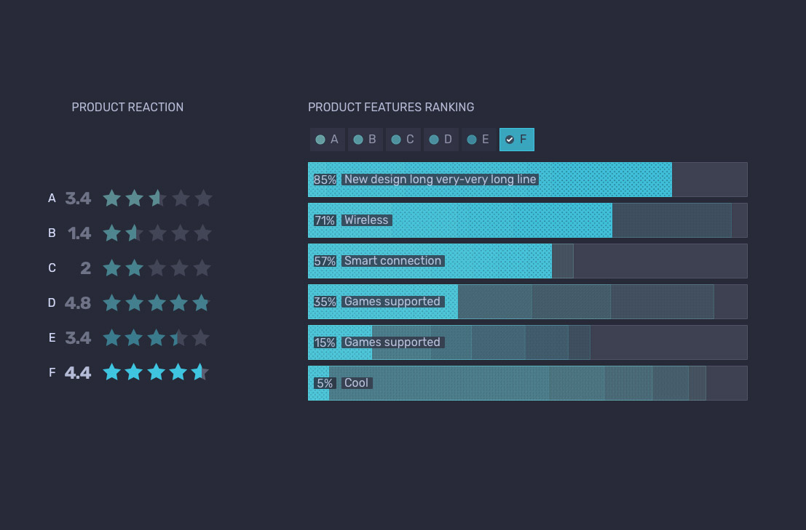

Data Visualization
Data visualization templates.
Situation
Zectr is in the field of providing business insights to clients, based on survey data. Over the years I had to design multiple data visualization templates to accommodate vast variety of data insights.
Task
The most important task when designing data viz is re-usability. Data can vary drastically, but charts stay the same. So the most challenging aspect if to design chart templates in such way, that they could be used over and over again, while continue looking good (no matter the quality of data) and highlight insights.
Year
2018-2022




Various Data Visualizations